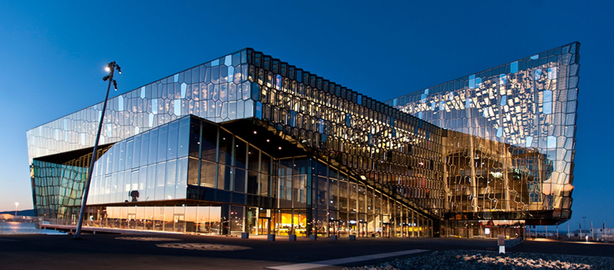

Open call
Sónar Reykjavik 2018
15th — 18th March
CALL IS NOW CLOSED
NAVA is inviting 4 acts to perform live visuals (VJ) at the festival and actively participate in the first meetup. Selected acts will be paired with booked sound artists / musicians for a collaborative performance.
Come and join an International team of artists and help co-create this years audiovisual experience!

Previous work at Harpa: Harpa Pong (2015), Harpa Lights (2016), Harpa Light Organ (2016), Harpa Lights (2017)
Apply
- To participate, artists have to reside in any of the Nordic countries: Denmark, Finland, the Faroe Islands, Greenland, Iceland, Norway, Sweden or the Aaland Islands.
- Application deadline: 31st of Jebruary 2018, 24:00 CET
- Application form
We welcome submissions that fit the following criteria
- Work that emphasises a close relationship between image and sound
- Projects or work submitted must be recent
Submissions will be judged on the basis of
- Originality
- Audience appeal
- Technical logistics and costs
Please note
- Short films and installation-based work is not considered for the current call.
Compensation
- Artist honorarium 100 Euro + Travel grant 100 Euro (paid out after the event)
- Additional compensation may be applicable depending on special situations, such as the need to bring heavy equipment
- Full festival pass for all participants
- Free access to industry relevant hands-on workshops organised by NAVA
Accomodation/Storage
- While NAVA will provide and/or suggest highly affordable accommodation, invited artists must still pay for their own lodging.
- NAVA will provide free and spacious options for storage but without any claim of responsibility for lost items or equipment.
Schedule
- 18.01.08 Open call start
- 18.02.01 Open call end
- 18.02.01-18.02.04 Jury meets
- 18.02.05 Invited artists announced by email (if you have not received an email it means you were not selected)
- 18.02.08 Invited artists announced on website
- 18.03.15 Meet & Greet with invited artists
- 18.03.16 Meetup NAVA
- 18.03.16-17 Sonar Reykjavik, rehearsal and performance
- 18.03.18 Meetup NAVA wrapup
FAQ
For questions not answered in this FAQ, please write contact@nava.community.
Can I apply as a team? Yes. However, you will not receive additional payment.
My nationality is different from the countries mentioned, can I still apply? Yes, it is only mandatory that you are a resident of the countries mentioned.
When do I receive the honorarium and travel grant? Payments are done shortly after the event.
What is the technical setup of the stage where I would be performing? This is yet to be decided but will be anncounced as soon as possible.
Which sound artist / musician will I perform with? The Sónar lineup is still being defined, more information will be shared with invited artists.
Can I apply with an installation? No, the open call is for live visual acts.
Terms and Conditions
- There is no entry fee.
- No restrictions apply regarding the concept of the artwork, with the exception of works that offend human dignity or support discrimination against individuals or group of people based on behavior, race, nationality or sexuality.
- Submissions can only be accepted via the online forms.
- Once a submission is made it is final. It cannot be amended or withdrawn.
- Submissions that do not include all requested documents and files will be considered incomplete and may not be accepted.
- Artists whose work is selected will be notified via email. In any cases where additional files will be needed, artists will be asked to upload these through email correspondence.
- By submitting a work the artists agree to allow NAVA to document their work with video and photography. Any future usage of these images and recordings will be in order to promote the artist and NAVA. Video excerpts for online use will be kept to under 5 minutes and any longer excerpts of the artists work, or alternative use of images or recordings in a different context be sort, full consent would be sought from the artist beforehand via email.
- All submissions must be able to be included in compilations, press or promotion that represent NAVA and Sónar Festival.
- The festival has no responsibility for copyright of works that include images or music created by others than the submitting artist.
- In case of transportation of works, charges for transportation and insurance are paid by the artists.
- NAVA has no responsibility in cases of damage or loss during installation or transportation of the work.
- NAVA can cancel the collaboration at any time, if circumstances do not allow for its realisation.
- With all submissions participants unconditionally agree to all terms above and allow the use of excerpts (or entire works in the case of streaming) by the organisers for publicity and archive purposes.